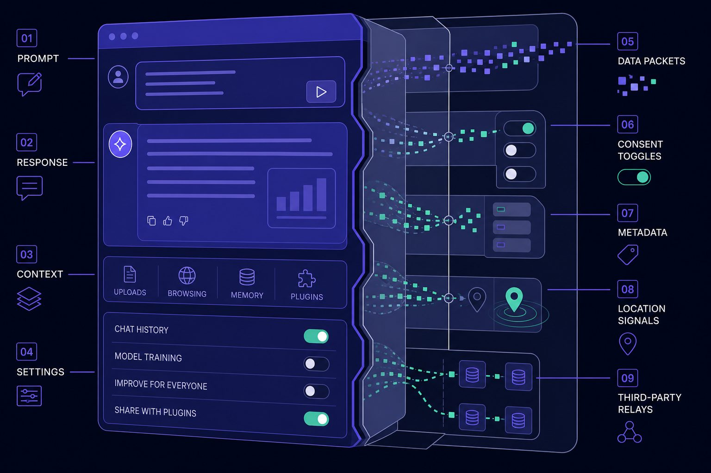
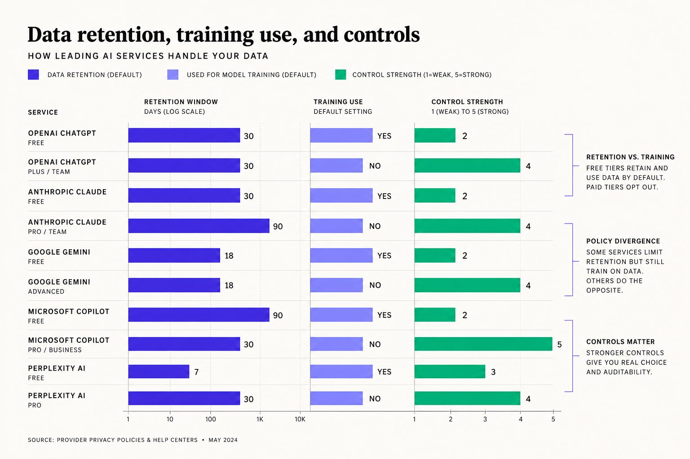
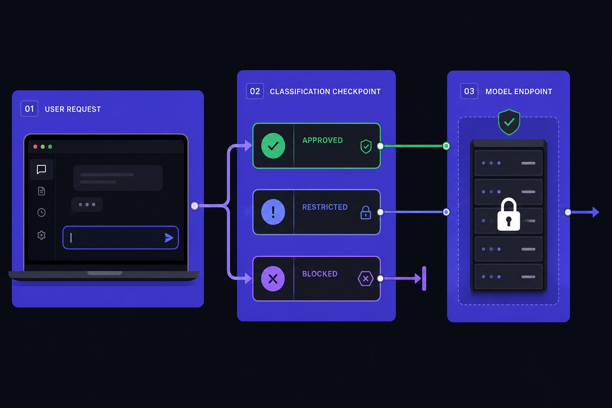
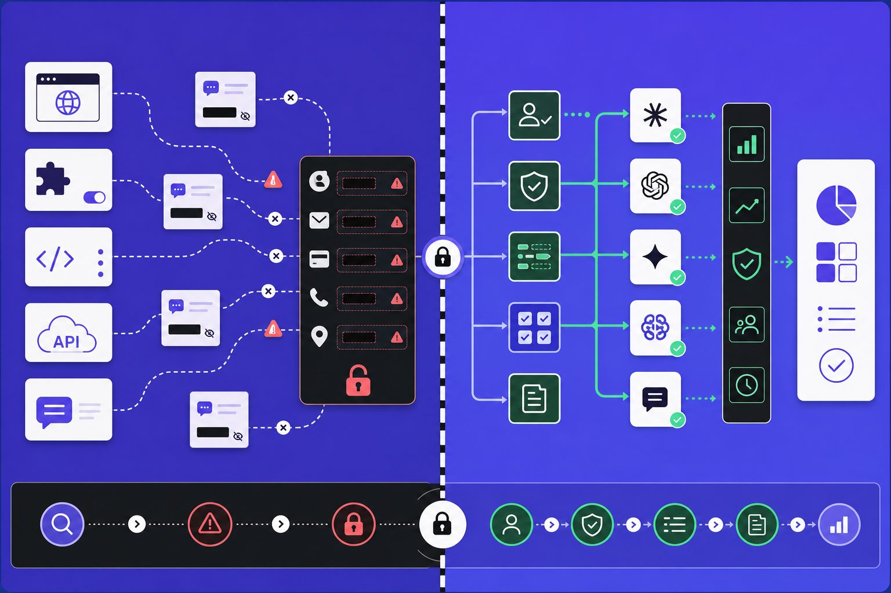

AI Privacy
AI Tools Expose Hidden Privacy Risks
AI tools can turn a normal prompt into a privacy incident fast. One pasted client brief, source file, or meeting note can expose data before your team notices the workflow changed.
Table of Contents
That gap is growing. According to Free AI tools - The Protec Blog, losses can reach $6M, while free privacy-focused web tools - AI Tools frames privacy as a 100% requirement for safer use. Staff now use consumer AI for notes, code, research, and client work long before governance catches up.
At Veritya Daily, we built our approach around that reality. We assess retention, training use, and enterprise controls in real publishing and research workflows. This article shows where AI security breaks down, and how to fix the root cause without slowing useful work.
Why AI tools create quiet privacy risks

The symptoms teams notice too late
At first, the problem looks harmless. AI tools save time, so people move fast. A marketer drops in a draft press note. An engineer pastes source code. A support lead copies a tense customer message and asks for a cleaner reply.
We saw this in one small moment. Late Friday, one shared draft held revenue notes, partner comments, and an unreleased plan. Nobody meant to create risk. The workflow was just faster than stopping to think.
That is why public assistants are not safe for sensitive business information by default. Safety depends on retention terms, training use, access controls, and audit logs. Without those controls, routine prompts become an AI privacy problem.
How the impact spreads across users and the business
The damage rarely ends with embarrassment. A pasted memo can weaken data privacy controls. Exposed code can hurt source confidentiality. Reworked customer replies can blur editorial integrity if teams cannot trace what entered the model.
The business impact spreads quietly. Compliance reviews get harder. Incident response gets slower. Trust erodes because leaders cannot prove what was shared, where it went, or whether it shaped future outputs.
Research from 41 Free AI Tools Everyone Can Use for Free shows speed gains can feel dramatic, with some workflows improving by 300x. That is exactly why adoption outruns caution. Fast wins change habits before AI security reviews catch up.
Why convenience changes behavior faster than policy
The root cause is behavioral, not theatrical. When a tool removes friction, users stop sorting prompts by risk. Low-stakes brainstorming and sensitive material start to feel the same because both fit inside one empty chat box.
According to 41 Free AI Tools Everyone Can Use for Free, 70% can quickly become the kind of headline number that shapes user expectations around constant access and ease. Policy loses that race if guardrails live only in a handbook.
So what should you never paste into AI tools? Never paste customer records, contracts, financial notes, unpublished drafts, legal strategy, credentials, API keys, internal roadmaps, or proprietary code. If the content would raise concerns in a breach report, keep it out and move the task into governed systems such as those discussed in AI Agent Security: Why Your Company's New Workers Are Bots.
Root cause analysis of data retention, training use, and controls

Data retention is not the same as deletion
The root cause is rarely one careless prompt. It is usually a design mismatch. Consumer AI defaults move fast. Enterprise data handling does not.
Teams often ask a simple question. Do AI tools keep your data? The hard answer is often yes, in some form. A hidden copy may still sit in logs, abuse monitoring systems, backups, or vendor-side storage.
That is why turning off chat history feels safer than it is. History settings often change the user view, not the full retention path. They may not explain where prompts persist, who can review them, or how long a subprocessor can access them.
We learned this the hard way during one review sprint. Forty-seven tabs were open. Week three had started. We still could not map one prompt from employee screen to final deletion state.
Training use policies are often misunderstood
The next blind spot is training use. Teams ask another direct question. Is your data used to train AI models? The honest answer depends on product tier, account type, contract terms, and admin settings.
Many vendors separate model improvement rules by plan. A public product may handle data one way. An enterprise workspace may handle it another way. That gap creates AI privacy risk when staff assume all versions follow the same policy.
Research from 41 Free AI Tools Everyone Can Use for Free shows how product tiers shape usage, with Pro plans offering 5x higher limits. That pricing split matters because controls often split the same way. Features, defaults, and governance are not always equal across tiers.
According to 41 Free AI Tools Everyone Can Use for Free, some free offerings remain available at a basic 1x access level. That convenience is the trap. Easy access speeds adoption before legal, security, and procurement set clear rules.
Enterprise controls fail when consumer defaults win
Most failures start before security sees a ticket. Staff adopt familiar consumer workflows first. Enterprise review comes later. By then, behavior is already normal, and weak defaults shape daily practice.
This is where AI security breaks down. Approval paths lag behind usage. Logging is incomplete. Access rules stay vague. A vendor privacy page may sound reassuring, but it does not replace contract terms, admin controls, or audit-ready evidence.
If you are comparing options, our guide to Top AI Tools 2026: Essential Platform Guide for Tech Professionals shows how fast choices multiply. More choice means more policy drift unless governance lives inside the workflow.
Quick fixes teams try and why they do not work
The common fixes are familiar. Ban AI in policy only. Trust staff judgment. Add a warning banner. These moves target behavior, not system design.
They also fail under pressure. Deadlines hit. Convenience wins. People copy, paste, and move on. That is a data privacy problem, not a training issue alone.
Real control means technical enforcement. You need approved tools, clear retention terms, admin settings, logging, and access boundaries. That same governance challenge appears in AI Agent Security: Why Your Company's New Workers Are Bots, where convenience outruns control unless systems enforce policy.
Our AI privacy solution strategy for safer adoption

Companies can use AI tools safely when the workflow changes before the prompt leaves the screen. We target the root cause first: ungoverned data flow. That means we classify content, approve narrow use cases, and send requests through controlled model endpoints instead of open consumer apps. This is the core of practical AI privacy, not a paper policy.
We classify prompts by risk before data leaves the user
Our first rule is simple: not every prompt deserves the same path. We score the request for sensitivity, context, and user role before anything is submitted. If the text includes deal terms, source names, credentials, or customer data, the system blocks, redacts, or transforms it. If the task is low risk, like headline options or generic summaries, it moves fast.
One moment made this clear for us. An editor pasted a draft note with a source reference still inside it. The task looked harmless at a glance. Our filter caught the name, stripped it, and sent only the safe text onward. That is what least privilege looks like in practice.
We route approved use cases to governed models
Fast adoption fails when every request goes everywhere. We define approved use cases first, then map each one to a governed endpoint. A style rewrite may go to one model. A research summary may go to another. Anything outside policy stops for review.
This matters because safe use should still feel usable. According to 41 Free AI Tools Everyone Can Use for Free, the market keeps expanding at 4X speed in some corners, which raises pressure to move faster. We answer that pressure with routing, not blanket denial. For broader context on tool sprawl, see Top AI Tools 2026: Essential Platform Guide for Tech Professionals.
We enforce retention training and admin controls centrally
Routing alone is not enough. We require vendor controls before a model is approved. That includes disabled training where supported, auditable retention settings, SSO, role-based access, export paths, deletion workflows, and legal review of subprocessors. If a vendor cannot support those basics, we do not treat it as enterprise-ready.
Research from 41 Free AI Tools Everyone Can Use for Free shows a 240x expansion pattern around accessible tool discovery, which makes central AI security controls more urgent. This is how companies protect data privacy without crushing useful work. We create a safer path for legitimate use, so teams do not hide activity in personal tabs. If your risk model extends to autonomous systems, read AI Agent Security: Why Your Company's New Workers Are Bots.
How we implemented controls and measured results

What worked was not one big lock. It was a phased rollout that people could actually follow. We started by finding every AI touchpoint already in use, including browser tools, plug-ins, team accounts, and API-based workflows. Then we ranked the riskiest tasks first, especially work tied to customer data, source material, internal strategy, financial notes, and production code. From there, we defined clear data classes, connected approved vendors to the right teams, enforced SSO, turned on centralized logging, and trained users on the safer path before broad rollout.
That order matters. If you train first, but leave open tools untouched, behavior does not change. If you lock access first, but offer no approved route, shadow usage grows. The practical fix is to pair policy with working infrastructure. That means shipping tools teams can use on day one, backed by controls they do not need to think about every time they write a prompt.
The fastest wins usually come from operational assets, not theory. We use regex and DLP-based redaction to strip account numbers, names, deal terms, and other sensitive fields before a prompt leaves the environment. We add API gateway rules that block unapproved destinations, restrict high-risk prompt patterns, and log requests for review. We build retention checklists so admins verify storage periods, deletion paths, model-training settings, subprocessors, and export controls before any rollout. We also create admin policy templates that define approved use cases, restricted data classes, escalation paths, and owner responsibilities. That shortens setup time and removes guesswork for legal, security, and operations teams.
We also measure results that reflect real risk reduction, not just policy completion. The first signal is whether public-tool usage falls after approved tools launch. The second is whether sensitive prompt submissions drop because redaction and routing now happen upstream. We also track review speed, because controls fail if approvals take too long. In healthy deployments, approved AI adoption rises as exceptions fall. That tells you the governed path is easier than the risky one. We want fewer manual workarounds, fewer access disputes, and fewer policy edge cases landing in inboxes every week.
The last piece is prevention. AI vendors change product terms, retention defaults, admin controls, and training settings more often than most teams expect. So the job does not end at launch. We run quarterly vendor reviews, update prompt handling standards, audit accounts and role assignments, retrain users on new workflows, and trigger change management whenever a provider changes how data is stored or used. That cadence keeps governance tied to actual product behavior, not outdated assumptions.
The result is simple. You do not need to choose between useful AI and responsible data handling. You need a system that makes the safe path fast, visible, and easier to repeat than the risky one. If your team is still relying on policy alone, or if consumer AI habits are already spreading faster than oversight, Learn More and reach out to learn more.